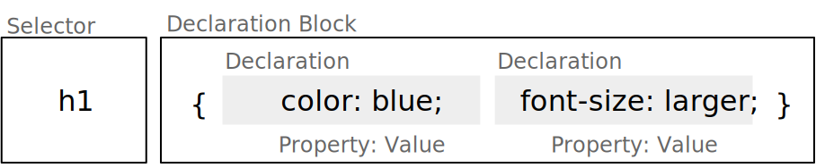

michael.eichberg@dhbw-mannheim.de, Raum 149B
1.0
CSS (Cascading Style Sheets) ist eine Stylesheet-Sprache, die verwendet wird, um das Aussehen von Dokumenten zu gestalten.
Historie
Entwicklung begann 1994; CSS 1 wurde 1996 veröffentlicht und war erst einmal ein Fehlschlag
CSS 2 wurde 1998 veröffentlicht
CSS 3 wurde modularisiert, um die Entwicklung zu beschleunigen
CSS Color Level 3 (2012)
CSS Namespaces Level 3 (2012)
CSS Selectors Level 3 (2012)
...
CSS Flexbox Level 1 (2018) (nach 9 Jahren Entwicklungszeit)
CSS Selectors Level 4 (2024 noch Draft Status; insbesondere :has() hat breite Unterstützung)
CSS Nesting (2024 noch Draft Status; dennoch bereits seit 2024 weit verfügbar)
Eine CSS-Datei besteht aus Regeln, die aus einem Selektor und einer oder mehreren Deklarationen bestehen:
CSS
h1 {
color: blue;
font-size: larger;
}
body { /* the boss said so... */
background-color :
lightblue;
}Resultat
CSS ist im wesentlichen Whitespace insensitive, d.h., Leerzeichen, Zeilenumbrüche und Tabulatoren werden ignoriert.
Kommentare werden in /* ... */ geschrieben.
Wir unterscheiden zwischen replaced elements bei denen der Inhalt nicht Teil des Dokumentes ist (zum Beispiel <img>) und non-replaced elements (zum Beispiel <p> und <div>; d. h. die meisten HTML Elemente).
Grundlegende Formatierungskontexte[1]: block (z. B. der Standard von h1, p, div, ...) und inline (z. B. der Standard von strong, span,...).
Block-Elemente generieren eine Box, welche den Inhaltsbereich des Parent-Elements ausfüllt.
(Replaced elements können, müssen aber nicht Block-Elemente sein.)
Inline-Elemente generieren eine Box innerhalb einer Zeile und unterbrechen den Fluss der Zeile nicht.
Mittels CSS kann der Formatierungskontext geändert werden.
h1 {
display: inline;
}
strong {
display: block;
}Folgendes Beispiel dient nur der Veranschaulichung:
Dies ist eine <strong><h1>Überschrift</h1>
in sehr wichtig</strong>; wirklich!Visualisierung
Inline CSS: <p style="color: red;">
Externe CSS-Datei:
über Link: <link rel="stylesheet" media="screen, print" href="style.css">
(Normalerweise im <head> deklariert.)
mittels import Direktive[2]: <style>@import url(style2.css);</style>
im <style> Element: <style> h1 { color: blue; } </style>
(Normalerweise im <head> deklariert.)
Das Verwenden beliebig vieler CSS-Dateien und style Elemente ist möglich.
Selektoren basierend auf dem Typ des auszuwählenden Elements (z. B. h1, div, span, ...); meistens von HTML Elementen.
Selektoren basierend auf den Werten der (einmaligen) id Attribute (z. B. #core, #impressum, ...).
Selektoren, die auf den Werten der class Attribute basieren (z. B. .important, .highlight, ...).
Selektoren, die auf einem Attribut bzw. dem Wert eines Attributs als solches basieren (z. B. [href], [type='text'], ...).
Selektoren in Hinblick auf den Zustand eines Elements (z. B. :hover, :active, ...).
Selektoren eines Teils eines Elements (z. B. ::first-line, ::first-letter, ...).
Gruppierungen von durch Kommas getrennten Selektoren für die die selben Regeln angewandt werden sollen (z. B. h1, h2, h3 { ... }).
Selektoren, die auf der Beziehung zwischen zwei Elementen basieren (z. B. div p { ... }).
HTML
<h1>Die Bedeutung des Seins.</h1>
<h1 class="wip">
Die Bedeutung des Nicht-Seins
</h1>
<h1 class="todo future">
Das Sein und das Nicht-Sein
</h1>CSS
h1 { color: black }
h1.wip { color: green; }
*.todo { color: red; }
.future { text-decoration: underline;}Resultat
basierend auf der Existenz eines Attributs: h1[lang] { color: red; }
basierend auf dem exakten Wert eines Attributs: h1[lang="de-DE"] { color: red; }
basierend auf einem partiellen Match:
enthält als eigenständiges de: h1[lang~="de"] { color: red; }
beginnt mit de: h1[lang^="de"] { color: red; }
substring de: h1[lang*="de"] { color: red; }
endet mit de : h1[lang$="de"] { color: red; }
beginnt mit de und wird dann gefolgt von einem Bindestrich oder steht alleine: h1[lang|="de"] { color: red; }
durch ein i am Ende wird der Selektor für den Wert case-insensitive: h1[lang="de-de" i] { color: red; }
HTML
<h1 lang="de-DE">Die Bedeutung des Seins.</h1>
<h1 lang="en-US">To Be Or Not To Be</h1>
<h1 lang="de-AT">Ich brauch ne Jause</h1>CSS
[lang] { text-decoration: underline; }
[lang|="de"] { font-size: larger; }
[lang="de-at" i] { text-transform: uppercase; }Resultat
Nachfahren (bzgl. Dokumentenstruktur) (Descendant Selector):
alle <p> Nachfahren von <div> Elementen
alle <p> Nachfahren von .important Elementen, die ein lang Attribut mit dem Wert de-DE haben.
Alle direkten Kinder (Child Selector):
alle <p> Kinder von <div> Elementen.
Benachbarte Geschwister (Adjacent Sibling Selector):
alle <p> Elemente, die direkt auf ein <h1> Element folgen und sich das Gleiche Eltern-Element teilen.
Allgemeiner Geschwister Selektor (General Sibling Selector):
alle <p> Elemente, die auf ein <h1> Element folgen und sich das Gleiche Eltern-Element teilen.
HTML
<h1>Ü1</h1>
Text
<p>P1</p>
<p>P2</p>
<p>P3</p>
<h1>Ü2</h1>
<div>
D1
<div>D1.1</div>
<div>D1.2</div>
</div>
<div>D2</div>
<div>D3</div>Spielwiese
erlauben das Selektieren von Elementen basierend auf ihrem Zustand
können beliebig kombiniert werden: a:link:hover { color: red; } selektiert alle Links, die noch nicht besucht wurden und über denen sich die Maus befindet
Ausgewählte Beispiele:
Bzgl. der Struktur: :first-child, :last-child, :nth-child(n), :nth-of-type(n), :root, :only-child, :only-of-type, :link, :visited
Basierend auf Nutzerinteraktionen: :hover, :active, :focus
Zustand des Elements: :enabled, :disabled, :checked, :valid, :invalid
Sprache und Lokalisierung: :lang(de), :dir(ltr)
Logische Selektoren: :not(selector), :is(selector), :where(selector), :has(selector)
Pseudo-class Selektoren beziehen sich immer auf das Element auf das sie sich beziehen.
HTML
<div class="oma" id="Maria">
<div class="papa" id="Fritz">
<div class="kind" id="Elias">
Kind 1
</div>
</div>
<div class="papa" id="Hans">
<div class="kind" id="Tobias">
Kind 2
</div>
</div>
</div>CSS
.papa:first-child { color: red; }Selektiert welches Element?
Selektiert wird ein Element mit der Klasse papa, wenn es das erste Kind seines Eltern-Elements ist. Es wird nicht das erste Kind des Elements selektiert.
Bei nth-child(n) und nth-of-type ist n eine Zahl oder ein Ausdruck (\(\alpha\,n+b\)), der eine Zahl ergibt (z. B. 2n+1 oder aber even). Das Zählen der Elemente beginnt bei 1.
:root selektiert das Wurzelelement des Dokuments, also das <html> Element.
:only-child und :only-of-type selektiert ein Element, das das einzige entsprechende Kind seines Eltern-Elements ist.
HTML
<input type="email"
placeholder="your email"
required>
<input type="email"
placeholder="your friend's email">Spielwiese
Da das zweite Eingabefeld nicht als required markiert ist, wird es auch dann als :valid betrachtet, wenn es leer ist.
Die Spezifizität eines Selektors bestimmt, welcher Stil auf ein Element angewendet wird, wenn mehrere Regeln auf ein Element zutreffen und diese bzgl. der gleichen Eigenschaften in Konflikt stehen.
Die Spezifizität wird durch einen Vektor (a, b, c) dargestellt:
a: Anzahl der ID Selektoren
b: Anzahl der Klassen-, Attribut- und Pseudo-Klassen Selektoren
c: Anzahl der Element- und Pseudo-Element Selektoren
Die Spezifizität wird in der Reihenfolge a, b, c verglichen.
Konzeptionell wird die Spezifizität pro Deklaration betrachtet.
Beispiele:
Selektor |
Spezifizität |
|---|---|
p { color: black; } |
0, 0, 1 |
section p { color: orange; } |
0, 0, 2 |
section > p { color: orange; } |
0, 0, 2 |
p.warning { color: red; } |
0, 1, 1 |
p[id*='this'] {color: green; } |
0, 1, 1 |
#main { color: yellow; } |
1, 0, 0 |
* { color: yellow !important; } |
0, 0, 0 (Important) |
HTML
<section>
<p id='this-is-it'>
Der erste Abschnitt!
</p>
<p class='obsolete'>
Ein alter Abschnitt.
</p>
</section>
<p>Der letzte Abschnitt.</p>Spielwiese
Kombinatoren haben keine Spezifizität.
* hat die Spezifizität (0,0,0)
eine Deklaration mit !important hat eine höhere Spezifizität alls jede Deklaration ohne !important. Alle als !important markierten Deklarationen werden nach den beschriebenen Regeln ausgewertet.
HTML
<h1 class="obsolete">1. Überschrift</h1>
<p>Ein alter Absatz</p>
<h2>2. Überschrift</h2>
<p>Ein neuer, besserer Absatz</p>Spielwiese
CSS Nesting ist erst seit 2024 in CSS verfügbar. Nesting findet bzgl. der Selektoren statt. Häufig(er) in Kombination mit At-Regeln (at-rules; z. B. @media) verwendet.
Der & Operator kann immer verwendet werden, ist aber oft optional.
p {
.obsolete {
text-decoration: line-through;
}
}ist äquivalent zu:
p .obsolete {
text-decoration: line-through;
}p {
&.obsolete {
text-decoration: line-through;
}
}ist äquivalent zu:
p.obsolete {
text-decoration: line-through;
}D. h. sollten nur solche Paragraphen durchgestrichen werden, die als obsolete markiert sind (d. h. <p class='obsolete'>) und nicht alle darunter liegenden Elemente, dann muss der & Operator verwendet werden (& ist dann nicht optional).
die meisten Eigenschaften (wie zum Beispiel color) werden vererbt
Eigenschaften, die nicht vererbt werden sind zum Beispiel: border, margin, padding und background
vererbte Eigenschaften haben keine Spezifizität
(D. h. ein :where() Selektor oder der Universal-Selektor * gewinnen.)
Die Entscheidung welche Regeln bzw. Deklarationen Anwendung finden, wird durch die Kaskadierung bestimmt:
Bestimme alle Regeln, die auf ein Element zutreffen.
Sortiere die Regeln nach Gewicht des Selektors (d.h. !important oder normal)
Sortiere alle Deklarationen basierend auf der Quelle:
Autor (höchste Priorität)
Benutzer (mittlere Priorität; z. B. User-Stylesheets)
User Agent (niedrigste Priorität; z. B. Browser Standard Styles)
Sortiere nach Encapsulation Context (cf. Shadow-DOM)
Sortiere danach ob die Deklarationen Element Attached sind (d. h. mittels style Attribut)
Sortiere nach Cascade Layer
Sortiere nach Spezifizität
Sortiere nach Reihenfolge der Deklarationen
Der Shadow-Dom kapselt CSS und JavaScript bgzl. eines Elements. Dies ist insbesondere für Web-Komponenten relevant.
Sollte eine Deklaration möglicherweise nicht unterstützt werden, es jedoch einen vernünftigen Fallback geben, dann ist es möglich, die Deklarationen untereinander zu schreiben. Der Browser wird die unterstützte Deklaration verwenden und die anderen ignorieren.
Beispiel:
div {
height: 100vh;
height: 100svh;
}HTML
<hr>
<p class="new">
Neuer Absatz
</p>
<p class="new">
Noch ein neuer Absatz
</p>
<p>Alter text.</p>Spielwiese
:not(<list of selectors>) erlaubt die logische Und-Verknüpfung:
:not(<selector_a>, <selector_b>) ≘ nicht selector_a und nicht selector_b.
die Spezifizität ergibt sich aus der Sepzifizität des spezifischsten Selektors
Erlauben das Gruppieren von Selektoren innerhalb eines (komplexen) Selektors.
HTML
<hr>
<ol>
<li>Aufgezählt</li>
</ol>
<ul>
<li>Ein Punkt</li>
</ul>Spielwiese
:is() und :where() unterscheiden sich nur in der Spezifizität. (0 bei :where(); die Spezifizität des spezifischsten Selektors bei :is().
HTML
<ol>
<li class="important">Aufgezählt</li>
<li>Aufgezählt</li>
</ol>
<ul>
<li>Ein
<span class='important'>Punkt</span>
</li>
<li>Semikolon</li>
</ul>Spielwiese
bei :has() werden die Selektoren relativ zum Element ausgewählt, welche den Anker für :has() bilden
:has(<list of selectors>) verknüpft die Selektoren mittels logischem Oder.
:has(<selector_a>, <selector_b>) ≘ selector_a oder selector_b passt.
die Spezifizität ergibt sich aus der Sepzifizität des spezifischsten Selektors
Mittels :has können wir (hier) eine Liste als ganzes selektieren, wenn ein Element in der Liste eine bestimmte Klasse hat (z. B. important).
CSS Selektoren werden auch von der JavaScript API für HTML Dokumente verwendet, um Elemente zu selektieren.
Einige Eigenschaften haben Schlüsselworte, die spezielle Werte repräsentieren (z. B. none bei text-decoration)
Das gleiche Schlüsselwort kann verschiedene Bedeutungen haben (z. B. normal bei letter-spacing und font-style)
Es gibt fünf globale Schlüsselworte, die immer verwendet werden können: inherit, initial, unset, revert, und revert-layer.
Strings können in ' oder " eingeschlossen werden
Identifikatoren (z. B. checked)
URLs werden mittels url(...) angegeben
Ganzzahlen, Fließkommazahlen und Prozente
Ausgewählte Distanzen:
Absolute Längen: cm, mm, in, pt, pc, px
Relative Längen:
Charakter bezogene Längen: em, ex, lh
Root bezogene Längen: rem (root-em)
Relation: fr (Anteil vom Leerraum)
Viewport bezogene Längen: vw (viewport width), vh (viewport height), dvh (dynamic viewport height), dvw (dynamic viewport width), svh (small viewport height), svw (small viewport width)
Funktionswerte: calc(), min(), max(), clamp(<min_value>,<preferred_value>,<max_value>), attr und über 90 weitere Funktionen
Farben werden spezifiziert mittels Schlüsselworte: (red, green, etc.), RGB-Werte: rgb(<red>,<green>,<blue>) oder rgb(<red> <green> <blue> [/ <alpha>]); oder ...
Zeitangaben: s und ms
Verhältnisse: <number> / <number> (z. B. 16/9)
Benutzerdefinierte Eigenschaften (CSS Variables):
Beispiel:
Deklaration
html { --main-color: red;}
(Häufig :root {...} statt html.)
Verwendung inkl. Fallback-Wert:
p {color: var(--main-color, black)}
Der Scope ergibt sich aus dem Element, in dem die Variable definiert wurde.
Bei Verwendung findet einfaches (textuelles) Ersetzen statt.
px ist ein Pixel ist die Größe, die man benötigt, wenn man 96 Pixel pro Zoll hat; px ist die Einzige absolute Längeneinheit, die von Webseiten typischerweise verwendet wird. Ein Pixel ist somit unabhängig von der Größe eines Pixels auf dem Bildschirm!
em der Wert der Font-Größe des aktuellen Fonts.
ex ist die größe eines kleinen x im aktuellen Font
lh computed line-height
calc erlaubt verschiedenste Berechnungen ist aber an einigen Stellen Whitespace-sensitive und unterliegt bestimmten Einschränkungen welche Arten von Werten verrechnet werden können. (+ und - müssen immer mit Leerraum umgeben sein.)
Der Wert einer CSS Eigenschaft wird wie folgt bestimmt:
der spezifizierte Wert wird basierend auf der Auswertung der Kaskadierung bestimmt
der berechnete Wert (computed value) wird bestimmt basierend auf der CSS Spezifikation
(Dieser Wert lässt sich mittels JavaScript abfragen.)
der verwendete Wert (used value) wird bestimmt basierend auf dem berechneten Wert und den Eigenschaften des Ausgabemediums
(Größen sind zum Beispiel in Pixel.)
der tatsächliche Wert (actual value) wird bestimmt basierend auf dem verwendeten Wert (z. B. durch Rundung auf ganze Zahlen)
jedes Element erzeugt eine Box (Element Box):
entweder eine Block Box
oder eine Inline Box
Es ist möglich den Typ der Box zu ändern.
Es ist möglich die Größe der Box zu ändern.
Basierend auf der Größe des Inhalts: max-content, min-content, fit-content
(Insbesondere - aber nicht ausschließlich - genutzt bei Grid-Layouts.)
Explizite Angabe der Größe: width, height, min-width, max-width, min-height, max-height
absolute Werte: insbesondere px
relative Werte: width: x% setzt die Breite auf x% der Größe des Containing Block. height: y% setzt die Höhe auf y% der Größe des Containing Block - wenn dieser eine explizite Höhe hat!
auto ist der Standardwert
Die Größe wird bei Inline-Replaced Elements ignoriert.
Die Größe der Box berechnet sich nur aus der Größe des Inhalts (d. h. der content Bereich); dies kann geändert werden durch: box-sizing: border-box;
box-sizing: border-box; setzt die Größe der Box auf die Größe des Inhalts plus Padding und Border. (Der Standardwert ist content-box.)
Im Zentrum ist der Content-Bereich (Content Area)
MarginBorderPaddingContent Area
Das Layout erfolgt relativ zum Containing Block.
Eine Block Box generiert vor und nach ihrer Box einen Leerraum entlang des normalen Flusses des Dokuments. Eine Inline Box, die länger als eine Zeile ist, wird in mehrere Zeilen umgebrochen - außer bei Replaced Elements.
Padding und Border können nicht negativ sein. Margin kann negativ sein.
outlines belegen keinen Platz und sind nicht Teil des Box-Modells.
HTML
<div class="container">
<div style='width:1000px;
text-align:center;'>
1
</div>
<div>2</div>
<div>3</div>
</div>
<p>Der Test ist zu lang.</p>Spielwiese
HTML
<div class="container">
<div>1</div>
<div>2</div>
<div>3</div>
</div>Spielwiese
Elemente können mit float aus dem normalen Fluss genommen werden:
HTML
<div>
<aside style='
height: 5lh; padding: 1em;
background-color: black; color: white'>
Rechtspopulismus
</aside>
[...] Dabei verhält sich der Rechtspopulismus
durchaus ambivalent: Während er in einigen
Bereichen der Politik, wie der Kriminalitäts-
bekämpfung, einen starken Staat fordert, lehnt
er ihn in anderen Bereichen ab und fordert
stattdessen Volksabstimmungen, weil er dem
repräsentativen Charakter von Parlamenten
misstraut und durch sie den Volkswillen
verfälscht sieht. [...]
<cite> Wikipedia - Rechtspopulismus </cite>
</div>Spielwiese
Varianten:
left: Element wird links ausgerichtet
right: Element wird rechts ausgerichtet
none: Element wird nicht ausgerichtet
Standardansatz für das Erstellen von Layouts in den Anfangstagen (totaler Hack!)
Um zu verhindern, dass ein Float in ein anderes Element hineinragt, kann clear verwendet werden.
HTML
<div class="page">
Ein erster Text.
</div>
<div class="page">
Hier kommt mehr text.
</div>Spielwiese
Die Positionierung erfolgt dann über die Offset Eigenschaften:
Abstand zum oberen Rand des Containing Block
Abstand zum rechten Rand des Containing Block
Abstand zum unteren Rand des Containing Block
Abstand zum linken Rand des Containing Block
relative positionierte Elemente verhalten sich wie static positionierte Elemente; bilden jedoch den Containing Block für absolute positionierte Elemente.
absolute positionierte Elemente werden relativ zum nächsten positionierten Elternelement positioniert. Sollte ein solches Element nicht existieren, dann wird das Element relativ zum Initial Containing Block positioniert.
Das Element wird relativ zum Viewport positioniert.
Das Element bleibt im normalen Fluss, bis der Zeitpunkt erreicht ist, an dem es fixiert wird (d. h. absolut positioniert wird).
Layout-Modell, das es ermöglicht Elemente einfach innerhalb eines Containers anzuordnen.
(Aktiviert mit display: flex; oder display: inline-flex)
HTML
<div id="main">
<div class="flex-container">
<div class="flex-item">1</div>
<div class="flex-item">2</div>
<div class="flex-item">3</div>
</div>
</div>Spielwiese
Flexbox ist ein ganzes CSS-Modul, dass aus mehreren Eigenschaften besteht.
Eigenschaften des Container: flex-direction, flex-wrap, justify-content, align-items, align-content, (row-|column-)gap
Eigenschaften der Elemente des Containers: align-self, flex-grow, flex-shrink, flex-basis, order
Flexbox unterscheidet zwischen der Main Axis und Cross Axis. flex-direction legt die Hauptachse fest.
Ziel ist es sicherzustellen, dass eine Webseite auf verschiedenen Geräten mit (sehr) unterschiedlichen Auflösungen gut aussieht.
Durch unterschiedliche Techniken umsetzbar
Media-Queries
Flexbox
Grid-Layout
<h1>Überschrift</h1>
<p>
Ein Absatz.
</p><style>
@media screen and (600px <= width < 1200px) {
body { background-color: lightblue; }
html { font-size: 16px; }
}
@media screen and (width < 600px) {
body { background-color: red; }
html { font-size: 12px; }
}
@media screen and (width >= 1200px) {
body {
background-color: whitesmoke;
transition: all 2.5s;
}
html { font-size: 24px; }
}
</style>Der Type kann für referenzierte Stylesheets direkt angegeben werden:
<link rel="stylesheet" media="screen and (max-width: 600px)" href="small.css">
<link rel="stylesheet" media="print" href="print.css">Kombination von Media-Queries und CSS Nesting, um Drop Caps nur auf großen Bildschirmen anzuzeigen.
p {
font-size: 0.9rem;
font-style: italic;
min-height: 3lh;
@media (width >= 1200px) {
&::first-letter {
float: left;
font-size: 2lh;
line-height: 2lh;
font-weight: bold;
}
}
}<section>
<p>
D-Day bezeichnet im Englischen
den Stichtag militärischer
Operationen.
</p>
<p>
Die Europawahl 2024 ist die
zehnte Direktwahl zum
Europäischen Parlament.
</p>
<p>
Demokratie ist ein Begriff für
Formen der Herrschaftsorgani-
sation auf der Grundlage der
Partizipation aller.
</p>
</section><style>
section {
display: flex;
flex-direction: row;
flex-wrap: wrap;
gap: 1em;
}
section p {
flex-basis:
calc(900px * 999 - 100% * 999);
flex-grow: 1;
flex-shrink: 1;
background-color: whitesmoke;
padding: 1em;
margin: 0;
}
</style>Der Trick ist, dass die Berechnung für flex-basis so gewählt ist, dass ab einer bestimmten Größe der Wert für flex-basis entweder sehr groß ist (und damit nur noch ein Element in die Zeile passt oder eben sehr klein ist und damit alle Elemente in eine Zeile passen.)
Animation
Counter
CSS bzgl. Printing
Transformation (scaling, rotating, ...) .. scaling using scale vs. using transform: scale
(bisher nur grob) Flexbox (A guide to flex-box)
Grid-Layout (A complete guide to CSS Grid)
Cascade Layers
CSS Tricks .. e.g. assigning an index to an element using "nth-child"
Shadow-DOM (und HTML Custom Elements)
Styling von Dokumenten bei denen die Flussrichtung nicht links nach rechts ist
Versuchen Sie das Layout der folgenden HTML-Datei mittels CSS nachzubauen. Der HTML Code darf nicht verändert werden. JavaScript darf auch nicht verwendet werden. Den Rumpf der HTML-Datei finden Sie im Anhang.
Hinweise
Mit Hilfe der folgenden CSS Eigenschaften können Sie das Layout nachbauen. Es gibt aber viele Wege, die zum Ziel führen!
Verhalten (zum Beispiel mit Flexbox)
display: flex, flex-direction, flex-wrap, flex-basis, flex-grow, gap, height, overflow-y
Größen und Abstände
margin(-right|-left), border, padding, font-size, line-height
Optik
box-shadow, font-style, font-family, color, background-color, border-radius, text-decoration
Animation
transition: all 0.6s;
Nutzen Sie ggf. die Tricks aus dem Foliensatz!
Rumpf der HTML-Datei
<!DOCTYPE html>
<html lang="de">
<head>
<style>
html {
margin: 0;
border: 0;
padding: 0;
font-size: 24px;
}
/* TODO */
</style>
</head>
<body>
<header>
<nav>
<a href="#einfuehrung">Die Demokratie</a>
<a href="#lib_demokratie">Liberale Demokratie</a>
<a href="#rep_demokratie">Repräsentative Demokratie</a>
<a href="#dir_demokratie">Direkte Demokratie</a>
</nav>
</header>
<main>
Anlässlich der Gefahren, die unserer Demokratie drohen, sollte
man sich mit den verschiedenen Formen der Demokratie
auseinandersetzen.
<blockquote cite="https://de.wikipedia.org/wiki/Demokratie">
<h1 id="einfuehrung">Demokratie</h1>
<p>
Demokratie (von altgriechisch δημοκρατία dēmokratía
Volksherrschaft) ist ein Begriff für Formen der
Herrschaftsorganisation auf der Grundlage der
Partizipation bzw. Teilhabe aller an der politischen
Willensbildung. Es handelt sich um einen zentralen
Begriff der Politikwissenschaft, der ursprünglich aus
der Staatsformenlehre stammt und in der
Demokratietheorie erörtert wird. Die erste begriffliche
Erwähnung findet sich bezogen auf die Attische
Demokratie bei Herodot. Ideengeschichtlich wegweisend
für den Begriff war
die
Definition der Politie bei Aristoteles. Eine
schlagwortartige Beschreibung aus der Moderne liefert
Abraham
Lincolns Gettysburg-Formel von 1863: „Regierung des
Volkes, durch das Volk, für das Volk“.
</p>
<h1 id="lib_demokratie">Liberale Demokratie</h1>
<p>
Zur liberalen Demokratie, wie sie sich nach westlichen
Mustern herausgebildet hat, gehören allgemeine,
freie
und geheime Wahlen, die Aufteilung der Staatsgewalt bei
Gesetzgebung, Regierung und Rechtsprechung auf
voneinander unabhängige Organe (Gewaltenteilung) sowie
die Garantie der Grundrechte.
</p>
<h1 id="rep_demokratie">Repräsentative Demokratie</h1>
<p>
In einer repräsentativen Demokratie, in der gewählte
Repräsentanten zentrale politische Entscheidungen
treffen, haben oft Parteien maßgeblichen Anteil an der
politischen Willensbildung und an der durch
Wahlen
legitimierten Regierung. Die Opposition ist fester
Bestandteil eines solchen demokratischen Systems, zu
dem
auch die freie Meinungsäußerung samt Pressefreiheit, die
Möglichkeit friedlicher Regierungswechsel und
der
Minderheitenschutz gehören.
</p>
<h1 id="dir_demokratie">Direkte Demokratie</h1>
<p>
In einer direkten Demokratie trifft das Stimmvolk
politische Entscheidungen direkt.
</p>
</blockquote>
</main>
</body>
</html>